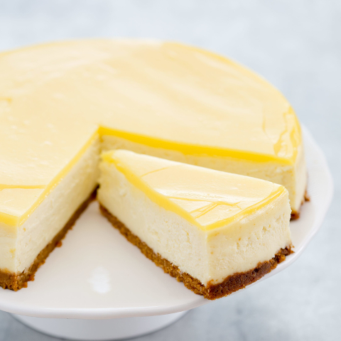

Lemon Cheesecake

Description
Need a simple, zingy dessert you can make with minimal fuss? Try this creamy lemon cheesecake, made with just a few basic storecupboard ingredients.
- 110g digestive biscuits
- 50g butter
- 25g light brown soft sugar
- 350g mascarpone
- 75g caster sugar
- 1 lemon, zested
- 2-3 lemons, juiced (about 90ml)
Steps
- Crush the digestive biscuits in a food bag with a rolling pin or in the food processor.
- Melt the butter in a saucepan, take off heat and stir in ther brown sugar and biscuit crumbs.
- Line the base of a 20cm loose bottomed cake tin with baking parchment.
- Press the biscuit into the bottom of the tin and chill in the fridge while making the topping.
- Beat together the mascarpone, caster sugar, lemon zest and juice until smooth and creamy.
- Spread over the and chill for a couple of hours.